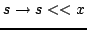

Usage
sx
Signatures
(TextWriter, %) TextWriter
%
| Parameter | Type | Description |
|---|---|---|
| s | TextWriter | an output stream |
| x | % | an object of the type |
Returns
s « x writes x in text format to the stream s and returns s after the write, while « x returns the function .
Example
import from TextWriter, MachineInteger, Character; stdout << 65 << space;
writes ``65 '' to the standard output stream, which could also be obtained via:
import from TextWriter, MachineInteger, Character; f := << 65; f(stdout) << space;